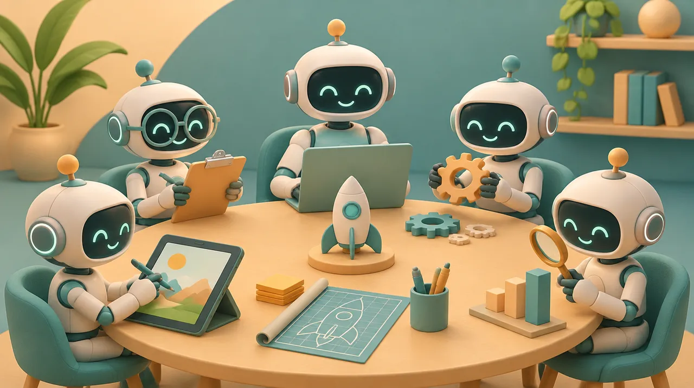

الـ Agents: وش هي ومتى تحتاجها
الـ Agent ذكاء اصطناعي ياخذ هدف وينفذ خطوات متعددة بأدوات حتى يوصله. الفرق بينه وبين الشات، ومتى يستاهل تستخدمه.

كلمة Agent صارت تنقال في كل مكان، وكثير ناس يحسبونها شات أذكى. الفكرة أبسط من كذا وأهم.
وش هو الـ Agent؟
الـ Agent ذكاء اصطناعي تعطيه هدف، وهو يقرر الخطوات وينفذها بنفسه باستخدام أدوات، خطوة بعد خطوة، لين يوصل للهدف. الأدوات ممكن تكون قراءة ملفات، كتابة كود، تشغيل أوامر، أو تصفح.
| الشات العادي | الـ Agent | |
|---|---|---|
| وش يسوي | يرد على سؤالك | ينفذ مهمة من أولها لآخرها |
| الخطوات | رد واحد كل مرة | خطوات متعددة متتالية |
| الأدوات | محدودة | يستخدم أدوات حقيقية |
| دورك | تنفذ أنت | تراجع وتوافق |
مثال واقعي: Claude Code
Claude Code مثال واضح على Agent. تقول له: صلّح الخطأ اللي يطلع في صفحة التسجيل. هو يقرا الملفات، يدور السبب، يعدّل الكود، يشغّل الاختبار، ولو فشل يحاول مرة ثانية. أنت ما كتبت كل خطوة، أنت عطيته الهدف.
وفيه شي اسمه Subagents، وهي Agents فرعية يطلقها الـ Agent الرئيسي عشان تشتغل على أجزاء من المهمة، مثل واحد يبحث في الملفات وواحد يراجع.
متى تحتاج Agent؟
- المهمة فيها خطوات كثيرة ومترابطة.
- تحتاج تشتغل على ملفات أو أدوات فعلية، مو بس نص.
- تتكرر عندك نفس المهمة وتبغى تختصرها.
ومتى ما تحتاجه؟
- سؤال سريع أو شرح فكرة: الشات يكفي.
- مهمة حساسة ما تقدر تراجعها، مثل حذف بيانات مهمة أو إرسال رسائل لعملاء.
- لما أنت نفسك ما تعرف وش تبغى بالضبط. وضّح الهدف أول.
كيف تعطي الـ Agent مهمة صح
- وضّح الهدف والنتيجة اللي تعتبرها نجاح.
- حدد الحدود: وش مسموح له يسوي ووش لازم يستأذن فيه.
- اطلب منه يعرض الخطة قبل التنفيذ.
- راجع النتيجة بنفسك قبل ما تعتمدها.
الهدف: نظّم مجلد الفواتير هذا. المطلوب: - رتب الملفات في مجلدات حسب الشهر. - سوّ ملف ملخص فيه اسم كل فاتورة وتاريخها. الحدود: - لا تحذف أي ملف. - اعرض علي الخطة أول وانتظر موافقتي. النجاح: كل فاتورة في مجلد شهرها، والملخص كامل.
الـ Agent والسكلز
الـ Agent يصير أقوى لما تعطيه خبرة جاهزة. هنا تجي فايدة السكلز في Claude Code: مجلدات فيها ملف SKILL.md تشرح طريقة شغل معينة، مثل التصميم أو كتابة المحتوى. الـ Agent يقراها لما يحتاجها ويمشي عليها. فبدل ما تعيد نفس الشرح كل مرة، تكتبه مرة وحدة في سكل. ابدأ بمهمة صغيرة تتكرر عندك، وجرّب تخلي الـ Agent يسويها، وشوف وين يحتاج توجيه أكثر.